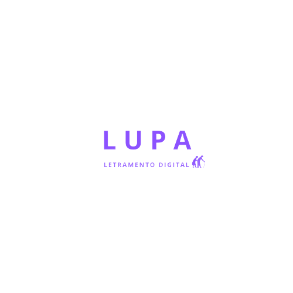
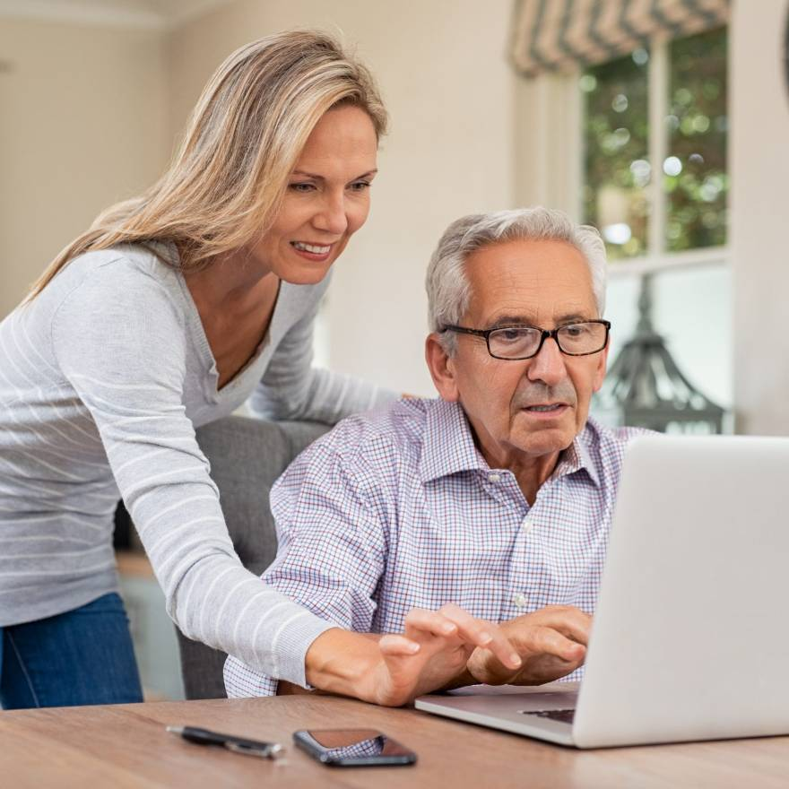
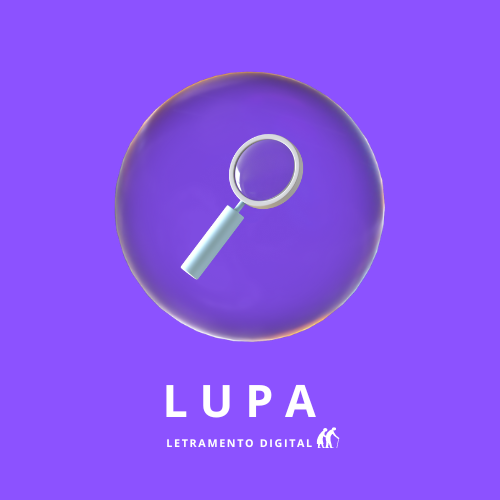

<!DOCTYPE html>
<html lang="pt-br">
<head>
    <script src="caminho-para-o-seu-arquivo-js/script.js"></script>
    <meta charset="UTF-8">
    <meta name="viewport" content="width=device-width, initial-scale=1.0">
    <link rel="stylesheet" href="style.css">
    <script src="js/script.js"></script>
    <link rel="preconnect" href="https://fonts.googleapis.com">
<link rel="preconnect" href="https://fonts.gstatic.com" crossorigin>
<link href="https://fonts.googleapis.com/css2?family=Poppins:ital,wght@0,100;0,200;0,300;0,400;0,500;0,600;0,700;0,800;0,900;1,100;1,200;1,300;1,400;1,500;1,600;1,700;1,800;1,900&display=swap" rel="stylesheet">
<link rel="stylesheet" href="https://cdn.jsdelivr.net/npm/bootstrap-icons@1.10.5/font/bootstrap-icons.css">   


    <title>Letramento digital para idosos</title>
</head>
</html>

<title>Lupa - Letramento Digital Para Idosos</title>
</head>
<body>
    
    <header>
        <div class="interface">
            <div class="logo">
                <a href="">
                    
                </a>
            </div>

            <nav class="menu-desktop"> 
                <ul>
                    <li><a href="#index.html">Início</a></li>
                    <li><a href="#sobre-nos">Sobre Nós</a></li>
                    <li><a href="cursos.html">Cursos</a></li>
                    <li><a href="#contatos">Contatos</a></li>
                        </ul>
                    </nav>
                    
                </ul>
            </nav>
            
            <div class="btn-contato">
                <a href="">
                    <button>Contato</button>
                </a>
            </div>
        </div>
    </header>

    <main>
        <section class="topo-do-site">
            <div class="interface">
                <div class="flex">
                    <div class="txt-topo-site">
                        <h1>Letramento Digital Para Idosos<span>.</span></h1>
                        <p>O programa de letramento digital para idosos é uma oportunidade emocionante para explorar o mundo digital de maneira acessível e envolvente. Projetado especialmente para essa geração, esse programa oferece orientação passo a passo sobre o uso de dispositivos eletrônicos, navegação na internet, comunicação por e-mail e redes sociais, e descoberta de aplicativos úteis. Com foco na construção de confiança e habilidades práticas, os idosos poderão aproveitar as vantagens da era digital enquanto se conectam com familiares, amigos e uma variedade de recursos online.</p>
                        <div class="btn-contato">
                            <a href="">
                                <button>Entre em Contato</button>
                            </a>
                        </div>
                    </div>

                    <div class="img-topo-site">
                        
                    </div>
                </div>
            </div>
        </section>

        <section class=" especialidades">
            <div class="interface">
                <h2 class="titulo">NOSSAS <span>ESPECIALIDADES.</span></h2>
                <div class="flex">
                    <div class="especialidades-box">
                        <i class="bi bi-universal-access-circle"></i>
                        <h3>Compromisso com a Acessibilidade</h3>
                        <p>Priorizamos a acessibilidade em tudo o que fazemos. Nossa abordagem inclui design acessível, conteúdo personalizado, suporte técnico dedicado, testes com idosos, melhoria contínua e treinamento de equipe para garantir que os idosos tenham uma experiência de aprendizado inclusiva e acessível. Nosso compromisso é tornar o letramento digital acessível a todos, independentemente da idade ou habilidade.</p>
                    </div>
                </div>

                <div class="flex">
                    <div class="especialidades-box">
                        <i class="bi bi-chat-heart"></i>
                        <h3>Abordagem Amigável para Idosos</h3>
                        <p>Entendemos os desafios únicos que os idosos enfrentam ao aprender tecnologia. Comprometemo-nos a oferecer um ambiente de aprendizado acolhedor e sem pressões, adaptado às necessidades individuais. Nossa abordagem é baseada na empatia e no respeito pelas preocupações dos idosos, proporcionando-lhes confiança e conforto ao explorar o mundo digital.</p>
                    </div>
                </div>

                <div class="flex">
                    <div class="especialidades-box">
                        <i class="bi bi-wechat"></i>
                        <h3>Suporte Técnico Acessível</h3>
                        <p>Oferecemos suporte técnico dedicado para auxiliar os idosos na superação de desafios e dúvidas durante o processo de aprendizado. Estamos prontos para fornecer orientação e assistência de forma acessível, tornando o letramento digital uma jornada mais tranquila e confiante para nossos alunos idosos.</p>
                    </div>
                </div>
            </div>
        </section>

        <section id="sobre-nos" class="sobre">
            <div class="interface">
                <div class="flex">
                    <div class="img-sobre">
                        
                    </div>

                    <div class="txt-sobre">
                        <h2>MUITO PRAZER, <span>SOMOS LUPA STARTUP.</span></h2>
                        <p>A "Lupa - Letramento Digital Para Idosos" é uma iniciativa focada em capacitar idosos a adquirir habilidades e conhecimentos relacionados à tecnologia digital. Este projeto visa oferecer um ambiente de aprendizado amigável e acessível, onde os idosos podem explorar o mundo digital de forma confortável e sem pressões. A Lupa se destaca por sua abordagem empática, compromisso com a acessibilidade, equipe qualificada e suporte técnico dedicado, tornando o letramento digital uma experiência enriquecedora para os idosos, independentemente de sua familiaridade prévia com a tecnologia.</p>
                        <p>Os idosos devem usar o site Lupa porque proporcionamos um aprendizado acessível, suporte dedicado, empatia e compreensão. Nosso compromisso com o enriquecimento de vida permite que os idosos aproveitem ao máximo o mundo digital. Em resumo, o site Lupa é um recurso valioso para nossos amigos da terceira idade!</p>
                        <div class="btn-social">
                            <a href="#"><button><i class="bi bi-instagram"></i></button></a>
                            <a href="#"><button><i class="bi bi-envelope"></i></button></a>
                            <a href="#"><button><i class="bi bi-whatsapp"></i></button></a>
                        </div>
                    </div>
                </div>
            </div>

        </section>

        <section class="projetos">
            <div class="interface">
                <h2 class="titulo">VÍDEO <span>AULA.</span></h2>
                <p>Querido idoso, as nossas videoaulas sobre o uso da internet são uma valiosa ferramenta de aprendizado projetada com foco na simplicidade e acessibilidade. Com o objetivo de capacitar nossos alunos da melhor idade a explorar o vasto mundo digital, nossas videoaulas oferecem orientação passo a passo e dicas práticas. Desde a navegação segura na web até a comunicação por e-mail e o uso de redes sociais, nossas aulas são ministradas com paciência e empatia, adaptando-se às necessidades individuais de cada aluno. Nosso compromisso é proporcionar aos idosos a confiança e as habilidades necessárias para aproveitar ao máximo as oportunidades online, promovendo uma experiência enriquecedora e inclusiva na era digital.</p>
                <div class="flex">
                    <video src="videos/Facebook - cadastro.mp4" controls width="400" height="400" poster="img/Capa - Vídeo Face Cadastro.png"></video>
                    <video src="videos/VídeoAula - Facebook.mp4" controls width="400" height="400" poster="img/Capa - Facebook.png"></video>
                    <video src="videos/E-mail.mp4" controls width="400" height="400" poster="img/Capa - E-mail.png"></video>
                </div>
            </div>
        </section>

        <section id="contatos" class="formulario">
            <div class="interface">
                <h2 class="titulo">FALA <span>COMIGO.</span></h2>

                <form action="">
                    <input type="text" name="" id="" placeholder="Seu nome completo:" required>
                    <input type="text" name="" id="" placeholder="Seu e-mail:" required>
                    <input type="text" name="" id="" placeholder="Seu telefone:">
                    <textarea name="" id="" placeholder="Sua mensagem:" required></textarea>
                    <div class="btn-enviar"><input type="submit" value="ENVIAR"></div>
                </form>
            </div>
        </section>
    </main>
    <footer>
        <p>&copy;  2023 Lupa Startup. Todos os direitos reservados.</p>
    </footer>
</body>
</html>
